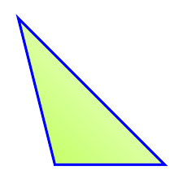
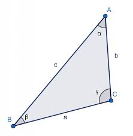
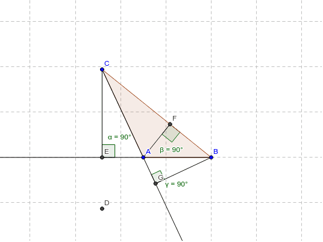

Un triángulo obtusángulo es un tipo de triángulo en el cual uno de sus ángulos internos es un ángulo obtuso, es decir, tiene una medida mayor a 90 grados. Los otros dos ángulos internos serán agudos, es decir, tendrán medidas menores a 90 grados.

Características principales de un triángulo obtusángulo:
- Ángulos internos: Un triángulo obtusángulo tiene un ángulo obtuso y dos ángulos agudos. La suma de los tres ángulos siempre será igual a 180 grados.

- Lados: Los lados de un triángulo obtusángulo pueden tener longitudes diferentes. Dependiendo de las medidas de los ángulos y los lados, los triángulos obtusángulos pueden clasificarse en diferentes tipos, como escalenos (todos los lados tienen longitudes diferentes) o isósceles (dos lados tienen la misma longitud).
- Altura: En un triángulo obtusángulo, la altura correspondiente al lado que forma el ángulo obtuso caerá fuera del triángulo, es decir, se extenderá más allá del lado.

- Relaciones trigonométricas: Las funciones trigonométricas, como el seno, coseno y tangente, también se aplican a los triángulos obtusángulos. Sin embargo, en un triángulo obtusángulo, estas funciones pueden tener valores negativos o no estar definidas para todos los ángulos, ya que dependen de la relación entre los lados y los ángulos.
Es importante destacar que un triángulo obtusángulo es solo una de las clasificaciones posibles para los triángulos según sus ángulos. Los otros dos tipos principales son el triángulo acutángulo (con todos los ángulos agudos) y el triángulo rectángulo (con un ángulo recto).